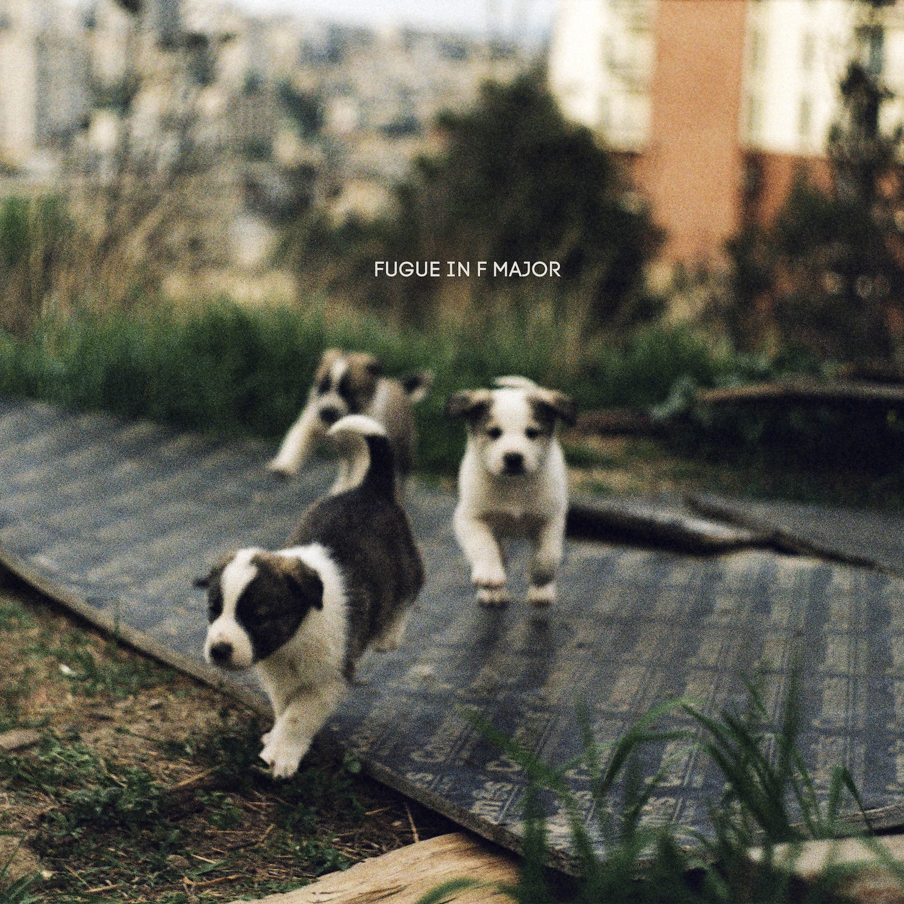
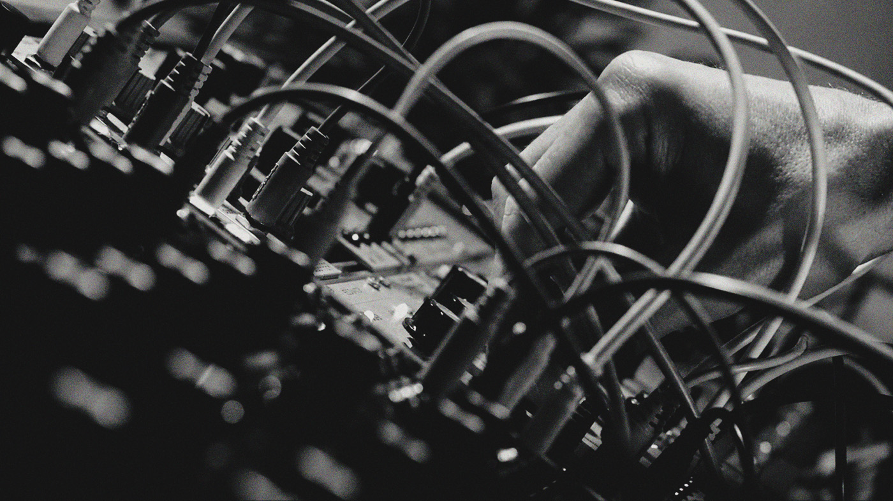

2025
Fugue in F major was recorded in a single take, late one evening, during a PeaceTime Station live stream.

I kept a microphone open to the surroundings and improvised on modular synthesizers, listening to what came through: rustling, distant noise, the breathing of the space. These sounds stayed in the music as part of it.
The piece moves in slow, repeating patterns. They change a little with each turn. The sound is soft and close.
Listening back, I decided to release it as an album.